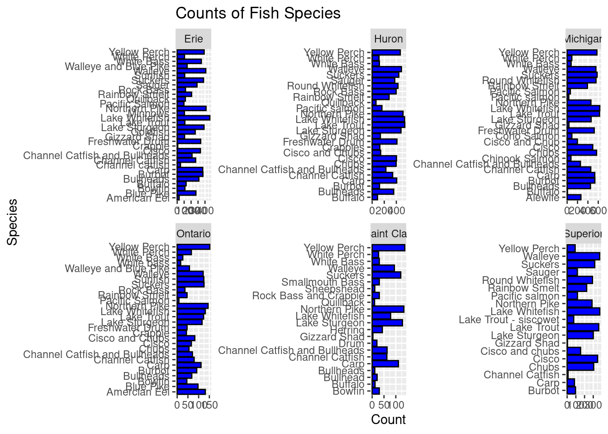
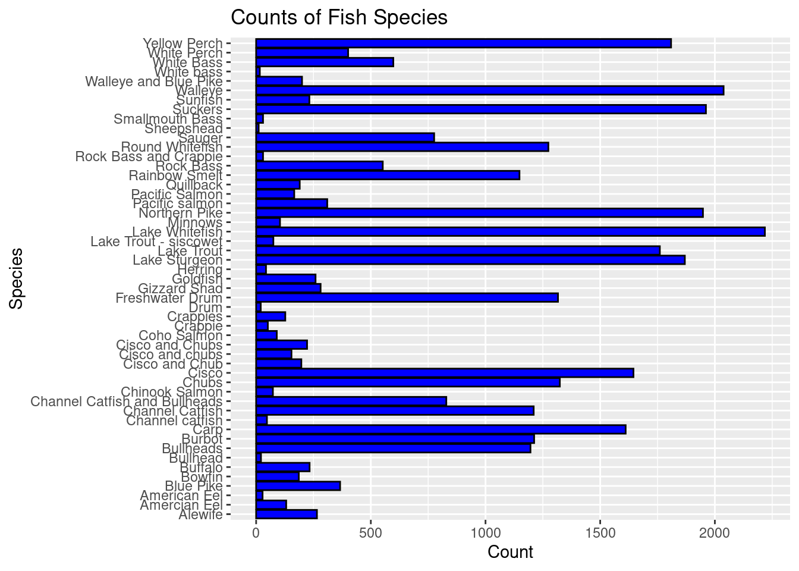

Quarto enables you to weave together content and executable code into a finished document. To learn more about Quarto see https://quarto.org.
Running Code
When you click the Render button a document will be generated that includes both content and the output of embedded code. You can embed code like this:
Rows: 65706 Columns: 7
── Column specification ────────────────────────────────────────────────────────
Delimiter: ","
chr (4): lake, species, comments, region
dbl (3): year, grand_total, values
ℹ Use `spec()` to retrieve the full column specification for this data.
ℹ Specify the column types or set `show_col_types = FALSE` to quiet this message.
Warning: One or more parsing issues, call `problems()` on your data frame for details,
e.g.:
dat <- vroom(...)
problems(dat)
Rows: 56232 Columns: 31
── Column specification ────────────────────────────────────────────────────────
Delimiter: ","
chr (17): LAKE, STATE_PROV, SITE, ST_SITE, STAT_DIST, LS_MGMT, SPECIES, STRA...
dbl (14): SID, YEAR, MONTH, DAY, LATITUDE, LONGITUDE, GRID, NO_STOCKED, YEAR...
ℹ Use `spec()` to retrieve the full column specification for this data.
ℹ Specify the column types or set `show_col_types = FALSE` to quiet this message.
Attaching package: 'kableExtra'
The following object is masked from 'package:dplyr':
group_rows
my_data_splits <-initial_split(fishing, prop=0.5)exploratory_data <-training(my_data_splits)test_data <-testing(my_data_splits)#See the first six rows of the data we've read in to our notebookexploratory_data %>%head(10) %>%kable() %>%kable_styling(c("striped", "hover"))
year
lake
species
grand_total
comments
region
values
1931
Michigan
Burbot
NA
NA
Indiana (IN)
15
1988
Huron
Chubs
1653
NA
Total Canada (ONT)
1583
1972
Huron
Northern Pike
40
NA
U.S. Huron Proper (HP)
NA
1908
Huron
Lake Trout
5431
NA
U.S. Total (MI)
1383
1942
Michigan
Cisco
NA
NA
Green Bay (WI)
NA
2008
Erie
Rock Bass
1
NA
U.S. Total
0
1992
Erie
Quillback
323
NA
New York (NY)
0
2014
Huron
Round Whitefish
30
NA
U.S. Huron Proper (HP)
20
1994
Michigan
Freshwater Drum
NA
NA
Green Bay (WI)
1
1919
Michigan
Cisco and Chub
NA
NA
U.S. Total
10704
install.packages("skimr")
Installing package into '/cloud/lib/x86_64-pc-linux-gnu-library/4.2'
(as 'lib' is unspecified)
library(skimr) exploratory_data %>%skim()
Data summary
Name
Piped data
Number of rows
32853
Number of columns
7
_______________________
Column type frequency:
character
4
numeric
3
________________________
Group variables
None
Variable type: character
skim_variable
n_missing
complete_rate
min
max
empty
n_unique
whitespace
lake
0
1.00
4
11
0
6
0
species
0
1.00
4
29
0
51
0
comments
30072
0.08
3
607
0
161
0
region
0
1.00
9
22
0
24
0
Variable type: numeric
skim_variable
n_missing
complete_rate
mean
sd
p0
p25
p50
p75
p100
hist
year
0
1.00
1954.42
38.60
1867
1922
1958
1988
2015
▂▆▆▇▇
grand_total
15880
0.52
1413.88
3581.93
0
10
106
943
48821
▇▁▁▁▁
values
11035
0.66
503.42
1819.77
-31
0
16
208
45548
▇▁▁▁▁
exploratory_data %>%count(species)
# A tibble: 51 × 2
species n
<chr> <int>
1 Alewife 265
2 Amercian Eel 131
3 American Eel 28
4 Blue Pike 366
5 Bowfin 186
6 Buffalo 233
7 Bullhead 21
8 Bullheads 1196
9 Burbot 1212
10 Carp 1611
# … with 41 more rows
exploratory_data %>%count(lake)
# A tibble: 6 × 2
lake n
<chr> <int>
1 Erie 7345
2 Huron 8536
3 Michigan 9555
4 Ontario 2276
5 Saint Clair 1207
6 Superior 3934
exploratory_data %>%ggplot() +geom_bar(mapping =aes(x = species), color ="black", fill ="blue") +labs(title ="Counts of Fish Species",x ="Species" , y ="Count") +coord_flip() +facet_wrap(~lake, scales ="free")

exploratory_data %>%ggplot() +geom_bar(mapping =aes(x = species), color ="black", fill ="blue") +labs(title ="Counts of Fish Species",x ="Species" , y ="Count") +coord_flip()

exploratory_data %>%ggplot() +geom_boxplot(mapping =aes(x = species , y = values), color ="black", fill ="blue") +labs(title ="Values of Fish Species",x ="Species" , y ="Value") +coord_flip() +scale_y_log10()
Warning in self$trans$transform(x): NaNs produced
Warning: Transformation introduced infinite values in continuous y-axis
I hypothesize that since the Lake Whitefish species is most abundant then this species will also have the greatest value (production amount).
Abstract
The Great Lakes Fish data set comes from Great Lakes Fish Commission and includes 7 variables on 65,706 fish. I have decided to ask and provide answers to different questions such as…
What species was observed the most throughout the lakes and regions? (overall grand total)
In what region were the most fish found overall?
Which specific lake housed the greatest amount of the most abundant species found in question 1?
What species yield the greatest production value?
Introduction
The data I am working with is a data set on fish in the Great Lakes. The variables included are qualitative such as fish species, the specific lake the species was found, the region the lake is located, as well as variables such as the year the fish species is found, the grand total, and values.
I split the data into exploratory and test data using the code above. My exploratory data includes 7 variables of 32,853 fish. These variable include year of measurement, lake name, species of fish, grand total of observed, region of the US/Canada, and value of production amounts.
Exploratory Analysis
I first used code to create a table that organized the count of each species in my exploratory data. One potential source of error that might affect my data analysis is that some of the species were grouped and counted together and/or the same species was counted two separate times. The code I used to create a species count table resulted in a 51 x 2 table but there are actually less than 51 species due to some of them being repeated. To the best of my ability, I tried to estimate which species was counted the most throughout the lakes and regions and determined that, based on my exploratory data, the Lake Whitefish was observed the most.
I then created another table that represents the count of fish in each lake. From the table I can see that 6 different lakes were observed with Lake Michigan holding the greatest amount of fish (9,590).
Lake
n (count)
Erie
7263
Huron
8621
Michigan
9590
Ontario
2317
Saint Clair
1164
Superior
3898
In order to answer the third question I used ggplot code and geom_bar code to create a bar graph of counts of fish species in each of the six lakes. Doing so, I am allowed to visualize the amount of each type of fish found in each of the different bodies of water. Compared to the rest of the species found in each lake, the Lake Whitefish species was most abundant in Lake Erie, Lake Huron, and Lake Ontario. Interestingly, Lake Michigan actually had the most Lake Whitefish at around 640. However, the Lake Whitefish species was the second highest count in Lake Michigan with the Lake Trout species being the greatest count in this lake at about 650.
The last question was answered by using r code to create a box plot of fish species and their values. It was determined that the values variables represents the amount of fish in thousand pounds that was collected and sold to other fisheries and commercial fishery businesses in the industry throughout the regions. The visual was made by using ggplot code and geom_box plot to create a box plot of each species and their value (production amounts) rounded to the nearest thousands pounds throughout the whole lakes region. Based on the box plot, it is evident that the Alewife species yielded the highest production amount.
Hypothesis Analysis
In my hypothesis I stated that if the Lake Whitefish species is most abundant then this species will also have the greatest value (production amount). I determined that my hypothesis was incorrect. Although the bar graph shows the Lake Whitefish species was most abundant with the highest count across all the lakes, the box-plot shows that the Alewife species yields the highest value in production across all the lakes and regions. Therefore, I must reject my hypothesis.